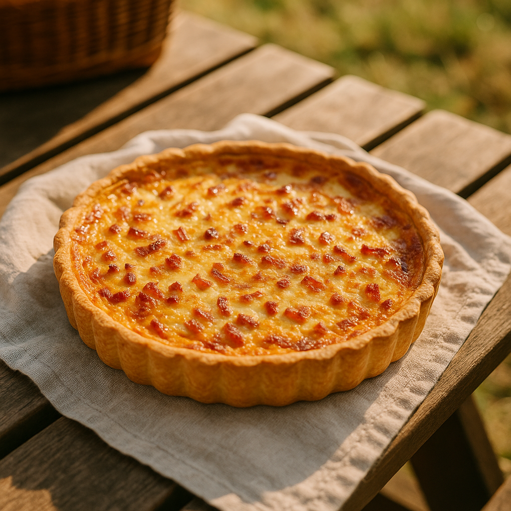
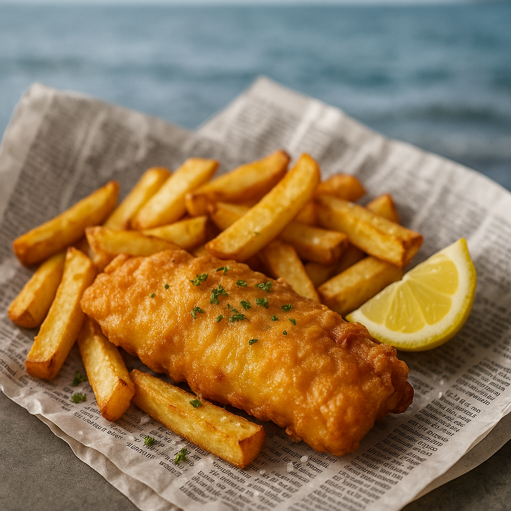
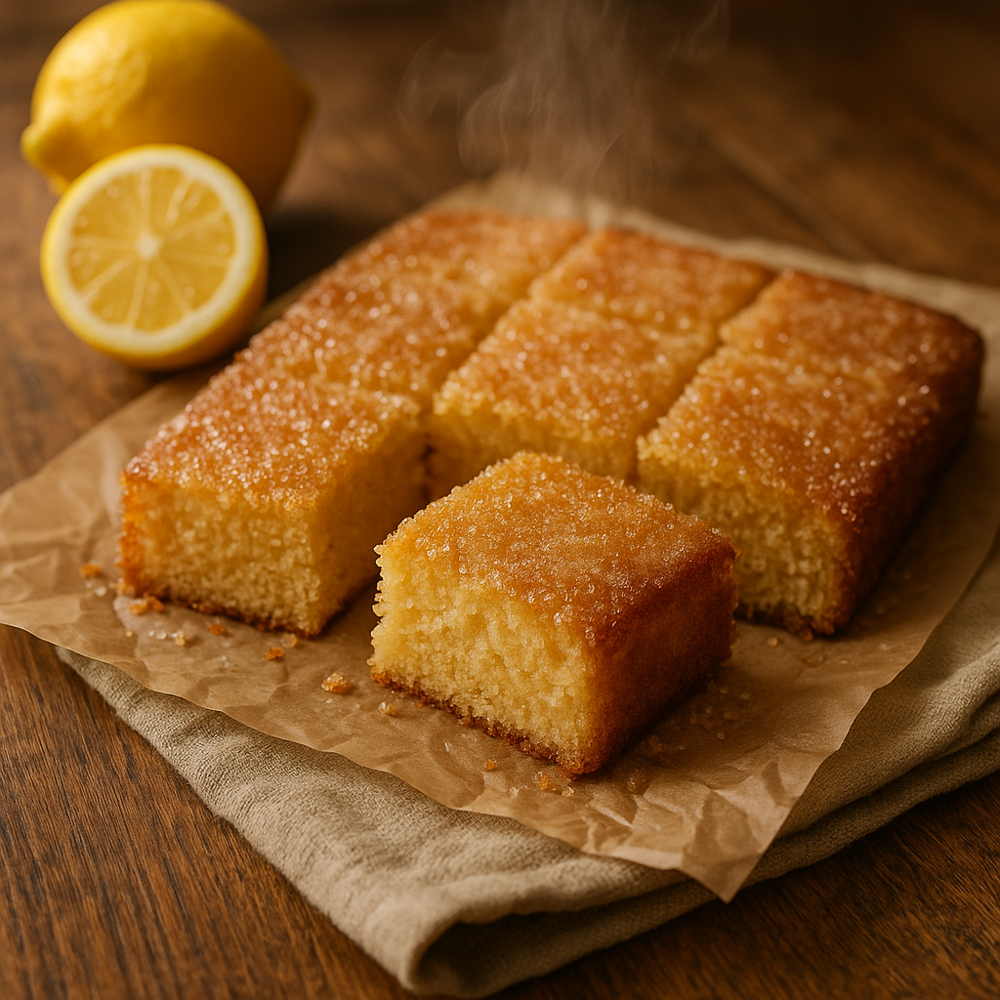
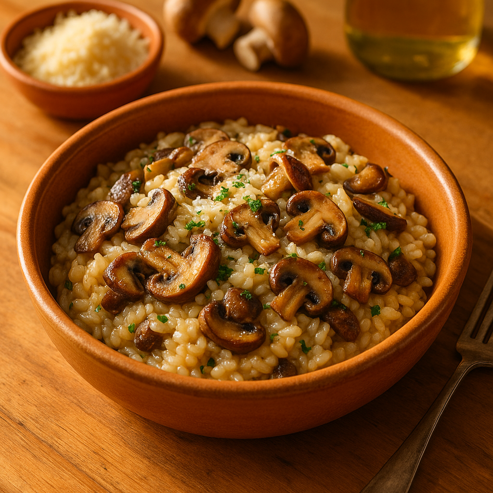

Semantic Search — live demo
familycookbook.home / recipes
G
Walker Family Cookbook
Recipes

Quiche Lorraine
45 min

Fish and Chips
50 min

Lemon Drizzle Cake
55 min

Spaghetti Carbonara
30 min

Chicken Tikka Masala
50 min

Mushroom Risotto
35 min